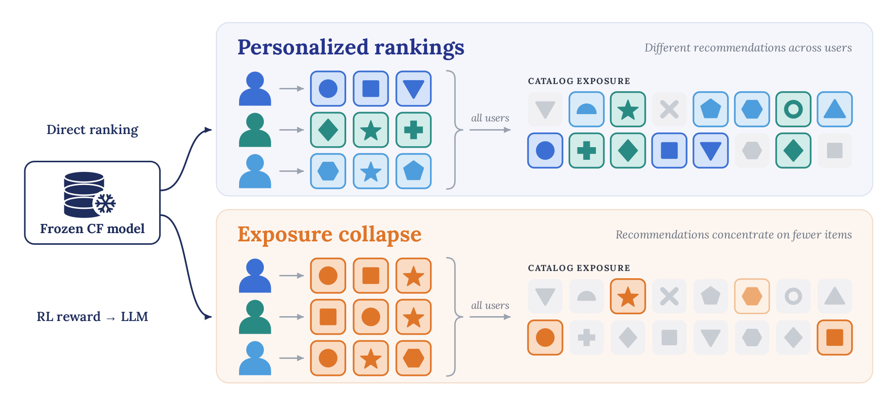
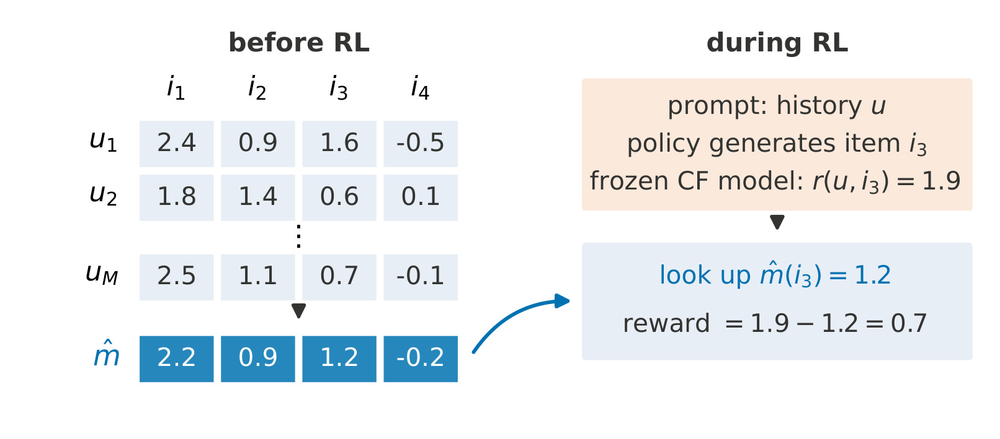
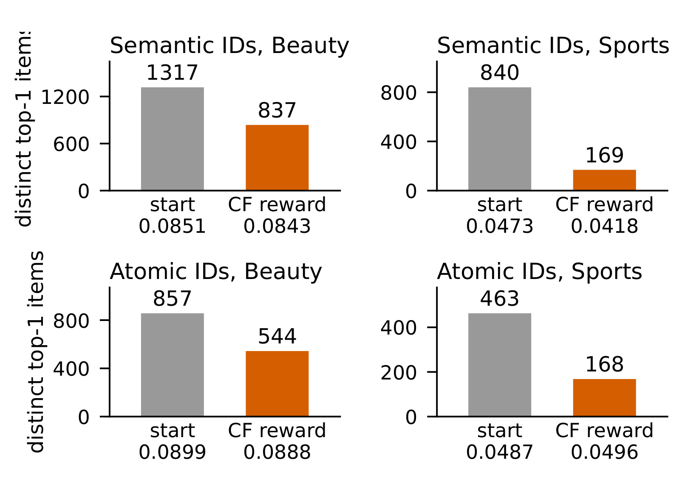
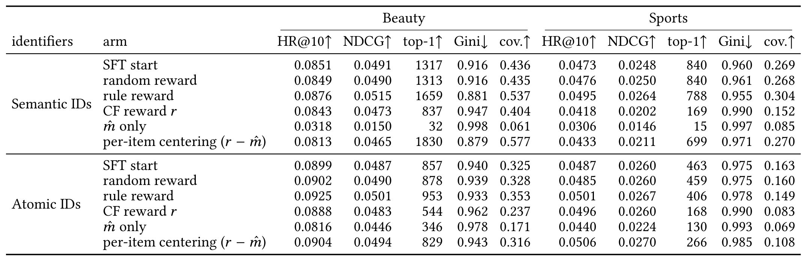
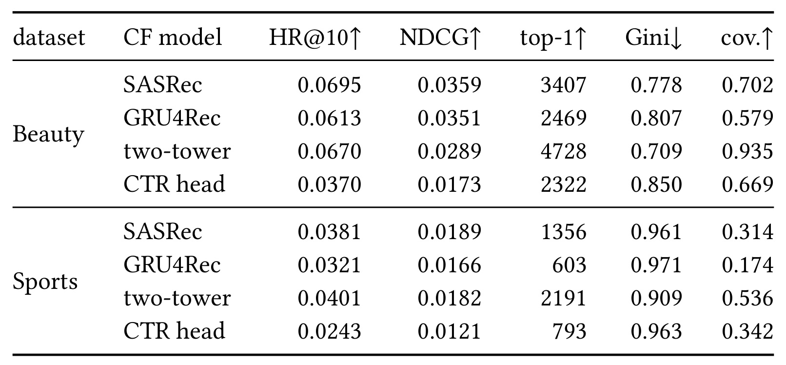
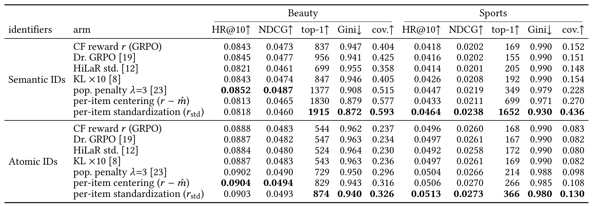
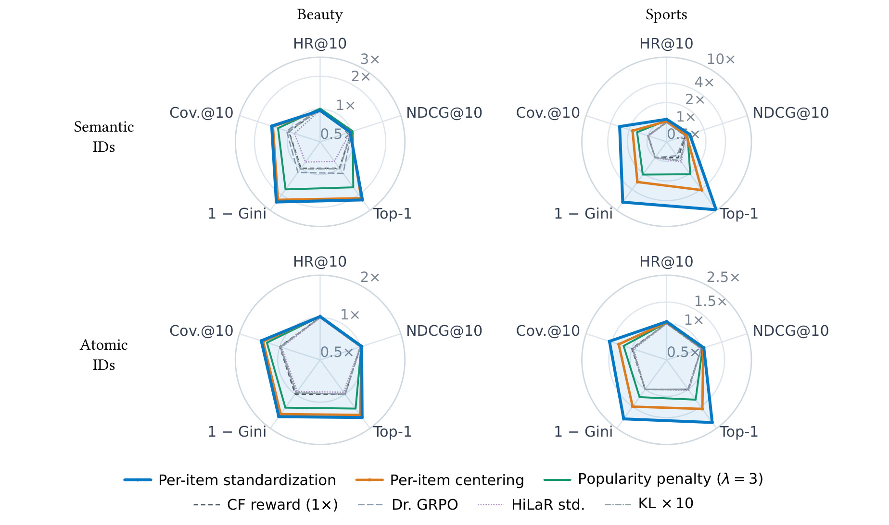
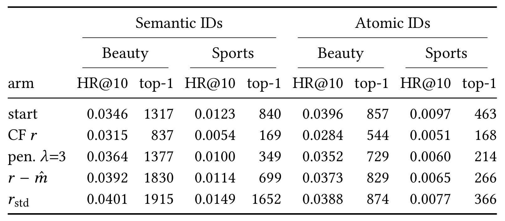
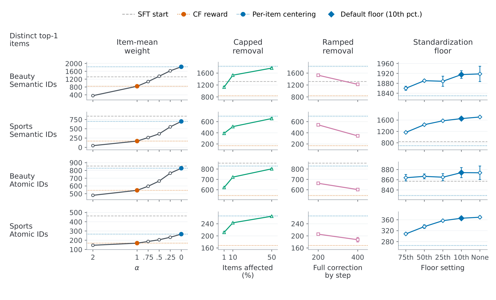
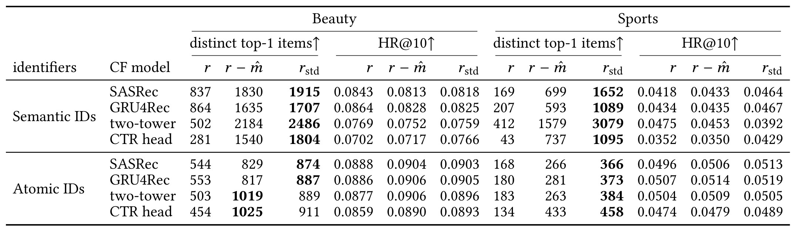

CF-Reward：推荐大模型怎样利用协同奖励的物品均值
加州大学圣迭戈分校的 Zhuangsheng Li、Google 的 Liang Dong 和加州大学圣迭戈分校的 Yu Wu 共同一作。合作机构包括弗吉尼亚大学、墨尔本大学、加州大学戴维斯分校和 Google。论文于北京时间 2026 年 11 月 5 日首发，内容聚焦推荐大模型后训练中的奖励分解和离线目录覆盖。作者在原文列出匿名代码入口，本轮访问返回 HTTP 401，独立公开实现未核验。 arXiv:2611.07588
冻结的协同过滤模型直接排序时能根据历史给不同用户不同列表，生成式策略用同一批分数做强化学习后，首位输出却可能集中到少数物品。聚合命中率可能只变化一点，因而需要拆开分数，检查对所有用户共享的物品倾向会怎样影响策略。
1. 背景和问题
1.1 打分器和策略的区别
下一物品推荐常把用户先前交互整理成时间序列，让模型给出接下来最值得推荐的物品。基于协同过滤的序列模型通过训练数据学习物品与历史的关系。对于一个用户，它能给整个目录每个物品打分，再挑选分数最高的若干个。生成式方案则把物品变成合法标识，并学习在给定历史时按顺序生成标识。监督微调先从观察到的下一个物品学习，得到一个已有能力的起点。接下来如果做强化学习，策略要从自己产生的物品中学习。日志里只有一个观察到的下一物品，其他合法候选未必都不合适，纯精确匹配给它们相同的反馈。协同模型的连续打分能在这些候选中区分相对好坏，因此可用已有模型构造密集奖励，省去为大量候选另建人工标签的成本。
这条接口的诱惑是把推荐模型已经学会的个性化直接交给大模型。实际有两种任务。协同模型直接给目录排序时，针对每个用户比较全部物品。强化学习中，协同模型评的是生成策略已经访问的物品，候选来自当前策略，反馈只对这一组样本产生梯度。即使给定同一历史，两边的有效选择集、优化目标和输出方式也不同。策略早期如果常生成某个物品，它会获得更多被打分和强化的机会。相反，某些物品只有特定历史下才突出，如果策略起点很少访问这些配对，教师原有的细粒度差异不容易变成训练信号。于是打分器仍然个性化，学出来的策略却可以把大量用户送到重合的少数物品。

Figure 1 把同一个冻结模型放在左边，向上直接对目录排名，向下为语言模型提供训练奖励。上半部三条用户历史对应不同颜色的列表，汇总后目录中许多格子被点亮。下半部虽然各用户的顺序还有些差异，但圆形、方形、星形反复出现，合并后覆盖物品更少。图中的形状表示物品身份，颜色和排列帮助区分不同路径，并没有量化次数、真实展示位置或业务曝光。它提出了一个可以用同一批评测用户回答的问题。先单独让冻结模型给全目录打分，再让受其奖励训练的策略输出，如果前者有丰富的首位集合而后者收缩，就应检查训练时奖励如何改变生成分布。反过来，如果冻结模型本身就几乎总把同一物品排到第一，便不能用这张示意图推断策略独有的放大机制。实际对照在主文和附录分别报告，并加入随机与规则奖励以检查现象是否随任何后训练而出现。
1.2 为什么命中率难以定位集中
离线命中率关心观察到的下一物品有没有进入前十。假设某个常见商品在许多人的日志里都是目标，即使模型把它推给更多人，整体命中也可能变化很小，甚至略增。原先分散在不同用户群的商品如果被逐步挤出，首位去重数会先发生变化。这里尤其容易混淆两个问题。单用户的列表里出现多个不同物品，能保证列表内部不重复，却不保证不同用户拿到不同商品。同一个十件套可以给全体用户并满足前者。另一方面，第一位的输出集合变大，也可能只是给许多用户换了不同的第一位，随后九个位置还高度集中。因此作者同时看首位去重、前十覆盖与全目录的次数不均等程度，并以命中率和排名折损约束质量解释。
分析方式也必须贴近所用日志。本文给每个测试用户固定一个历史和一个留出的下一物品，运行前缀约束解码，将生成的合法标识映回目录，随后统计同一批用户的模型列表。没有使用线上的请求频率、界面位置可见性、点击转化或供应商收益。所谓曝光是进入离线推荐结果的次数。全目录计数包含始终没进前十的物品，这使分布集中变得可见，也使结果依赖目录定义。如果另一个设置先过滤库存或已交互物品，物品分母和可被生成的集合都会变化，不能将两条覆盖曲线直接比较。
对准确率分组同样重要。训练交互数位于目录中段的目标物品，在全量评测用户中只占一部分。如果这些用户的命中显著退化，而头部目标得到更多命中，平均值可把两种变化抵消。将用户按留出目标的训练热度分层，可以看出误差来自怎样的目标。这个定义也不等于给用户划分长期兴趣或消费能力。按目标物品进行分桶只是用于解释离线结果，不能直接当作上线人群治理规则。用户历史长度、活跃度、目录上架时间和可见机会是额外的变化因素，需要单独留证据。
1.3 为什么检查共享物品分数
设有两个候选，一个在几乎所有历史下都能拿到偏高的协同分，另一个只在一小撮相关历史里分数突出。对训练中的候选集，前者即使和当前用户弱相关，仍可能因为其全局水平高而得到较强奖励。如果第二个物品很少出现在策略生成的同组候选里，策略也很少观察到能反超的情况。让更多候选参与训练可能改变这种访问结构，但协同分在不同物品之间的共享基线仍存在。作者问的是，能否从原始分数内部测量这一共享部分，并在冻结打分器和固定策略初始化的前提下把它拆出来。
历史频次本身不能充当上述分解。交互越多的商品可能更容易被协同模型打高分，可分数还受到表示参数、训练目标、负采样、用户历史分布以及优化轨迹的共同影响。两个有相似频次的物品，给参考历史得到的平均原始分可以差很多。同理，一个广泛适用的物品也可能在参考历史里得到高均值，即使这份均值包含真实的公共需求。把共享均值从奖励中扣去，意味着把策略优化重点转向相对个体偏好，可能同时丢失有用的共享信息。因此研究要并列比较两种证据。先看物品均值单独用于训练是否足以出现收缩，再看只保留当前用户残差能不能改变同一现象，并且用命中指标检查代价。两种干预能支持共享分量有贡献，却不能把完整训练结果线性分摊给两个分量，因为策略输出、训练采样和梯度都依赖被选中的物品。
之前的生成推荐工作已经在标识编码、偏好优化或解码里压制过度常见的物品，也有研究直接用协同打分作为密集的强化奖励。本文更窄，测试的是打分器与策略之间这一接口。它既不重新学习物品索引，也不在最终列表上额外施加配额。读这篇论文时最有用的区分是打分器排序正确性、策略对目录的访问、训练中物品奖励相对差值和最终输出分布。若只检查第一项或训练奖励曲线，就可能错过其余三项的变化。后面的逐物品实验把这几个观测单位拆开。
2. 方法
2.1 共同参考分布下的奖励分解
对每个历史上下文 $u$，冻结协同模型给物品 $i$ 的原始得分记为 $r(u,i)$。主实验具体取 SASRec 在历史最后位置对应候选物品的原始 logit。作者从有效、非空的训练历史构造统一的经验参考分布 $Q$。每个物品面对同一批参考历史，均值变化反映该模型在这一人群背景下的物品打分差异。
符号解释：$f_{\mathrm{CF}}$ 是冻结的协同打分函数，$m(i)$ 是只依赖物品身份的基线，$\varepsilon(u,i)$ 是当前历史的分数相对该基线的偏差，$Q$ 决定平均是对谁计算。残差在参考分布上的零均值来自定义。一个物品在当前用户上的偏差为正，仅表示协同模型认为它比这个物品对参考历史的平均表现更突出，不能解释成它一定比其他候选更相关，也不能把它当作点击概率。
这个分解还有一个几何解释。固定物品后，把所有用户条件分数投影到只由单一常数表示的空间，均值是期望平方误差最小的常数预测。偏差保留了无法由该常数解释的部分。这个计算也澄清了共同参考的重要性。若给每个物品只选历史中出现过它的用户来估计平均分，不同物品的均值会混入样本选择和用户构成差异，物品间的扣分不再以同一个参照定义。
符号解释：$c$ 是候选常数。对 $c$ 求导可得到均值，有限二阶矩保证此投影成立。该式只是描述共享分数如何被提取，和能否将共享部分解释为真实偏好或流行度机制是两回事。实际实验干预作用于有限样本估计，而非不可直接观测的总体均值。若参考分布改变，数学上依然能分解，业务上对共享项的定义却已改变。
2.2 离线统计与逐物品中心化
训练之前，作者对有效训练历史无放回均匀抽样，主设定取四千个历史。冻结 CF 模型对每个历史评整个目录，按物品累加得到每列均值。随后在强化学习阶段，给当前 rollout 的物品打原始分，按生成标识查表并扣掉该物品的均值。因为候选物品不同，扣掉的数也不同，同一个提示中两个候选之间的奖励差会改变。对同一物品而言，来自不同历史的原始评分排序仍相同，因为减的是同一个常数。这一特性让逐物品中心化能够改造跨物品的训练偏好，同时保留固定物品下的相对用户强弱。
符号解释：$M$ 是参考历史样本数，$u_j$ 是无放回抽到的第 $j$ 条训练历史，$\widehat m(i)$ 是样本平均，$r_{\mathrm{cent}}$ 是逐物品中心化后的奖励。样本上每个物品的平均残差为零，完整 $Q$ 上的平均残差等于 $m(i)-\widehat m(i)$，还包含估计误差。候选物品上线前若没有统计条目，这篇论文没有提供可直接照用的冷启动策略。

Figure 3 左边是一张历史乘物品的示意矩阵，每一行用同一冻结打分器给四个物品评分，省略号代表更多参考历史，最下方蓝格是对各列求均值。物品三的均值示意为一点二。右边到了强化阶段，输入是另一个历史，生成策略恰好产生物品三，冻结模型评得一点九，按物品索引取出一点二，形成零点七的奖励。两侧箭头划清了数据依赖。平均值只在训练前计算一次，在某一轮训练内与冻结模型同时保持固定。策略生成变多或变少，不会改变这一轮物品的参照统计，因此不会把当前采样分布当作计算均值的分母。图中数字只是说明运算，和主实验中的命中率或具体商品无关。这个流程也说明为何中心化不能等同于把同一提示组所有奖励减去同一个平均值。若同组另一个候选来自物品四，查出的是物品四的基线，两个候选的差值会因此变化。图里还体现了计算成本的分摊。全量目录评分发生在训练之前，策略更新期间的增量是读取候选物品的小表，协同打分仍需做。附录说顺序模型和双塔可对一条历史完成一次全目录前向，逐点点击模型则按历史物品组合批量评分。目录扩大时，表本身的存储随物品数增长，构造统计的评分工作量还依赖所选历史数和打分器结构。若打分模型版本或标识映射在统计生成后发生变化，查表值就不再对应当前原始分。这是将方法迁移到版本更新频繁系统时需要测量的工程边界。论文的冻结设定避免了同轮统计漂移，并没有实测高频刷新成本或异步发布的一致性。
2.3 逐物品标准化与策略更新
只扣均值时，不同物品残差的离散程度可能差很多。假如一个物品在各种历史下上下波动很大，它更容易在部分训练候选中获得极端正值。于是即使均值全被扣去，奖励尾部仍可能让大方差物品获得较多强化。逐物品标准化复用相同历史，把残差除以该物品的样本标准差，再设置分母下限限制小方差物品的放大。
符号解释：$\widehat\sigma(i)$ 是物品 $i$ 在参考样本上的标准差，$s_0$ 是同目录估计标准差的正下限，主实验取第十百分位，$r_{\mathrm{std}}$ 是标准化后的奖励。大方差物品除以各自的标准差，小方差物品则除以下限。这不是把最终奖励裁剪到固定区间。新用户可能落在历史样本分布之外，即使样本方差受控，某个未来残差仍能很大。样本上的性质可以直接计算。
符号解释：$\widehat Q$ 在实际抽到的历史上均匀取值。超过下限的非零方差物品在样本上被调到单位方差，其余物品保留小于或等于一的方差。经验中心化没有因为缩放消失。这里的参考轴是固定物品跨用户，和把同一用户对全目录的分数进行归一化不同。后者是 HiLaR 风格对照，仅复制其奖励归一化和裁剪，并没有复现整个方法。
修改的是冻结 CF 分数送入优化器前的处理，策略仍用 GRPO。对于一个提示，生成多个候选并在组内计算优势。该组可能包含好几个物品，物品基线改动会进入原始奖励之间的差值，再影响组均值和离散程度。即使最终对同一组再次归一化，逐物品转换的效果也不会一般性抵消。
符号解释：$x$ 是提示，$y_j$ 是组中的一个生成结果，$\overline r_x$ 和 $\sigma_x$ 是同提示候选组内的均值和标准差，$\epsilon$ 避免数值不稳定。分母里的组标准差不同于逐物品修正的 $\widehat\sigma(i)$。组标准化处理的是已经选中的 rollout 奖励，不能让没生成的物品得到监督。论文的候选来自约束采样束，每组十六条，在合法目录树下生成。附录的原始优势及小组变体也观察到集中，提示问题不能归到某一种优势写法，不过后者的 rollout 数和精度也改变，不能据此认为优化器与数据访问都无影响。两种逐物品修正训练后由策略直接解码，论文没有在测试排序上再次应用这两张统计表。
3. 实验结果
3.1 数据与基础塌缩
Amazon Beauty 有 15,750 名测试用户和 7,819 个物品，Sports and Outdoors 有 19,679 名测试用户和 10,052 个物品。每人的最后一个交互作为测试目标，倒数第二个用于验证，较早前缀用于训练，语言策略最多读取二十件历史物品。测试使用完整目录，保留已经交互过的物品。语义 ID 对标题、类目、品牌和描述的表征做残差量化，用三级语义编码和第四级冲突消解保证物品映射唯一。原子 ID 为每个物品分配专用的单个 token。两种方案都用合法前缀树约束候选，测试束宽二十，最后取前十。
每个配置内的训练臂共享一个监督微调起点。主策略用 Qwen2.5-0.5B-Instruct，冻结 SASRec 给当前用户历史和生成物品打原始分。通常使用四百步 GRPO，组大小十六，KL 系数为千分之一，原子 ID 学习率为三乘十的负六次方。语义 ID 的规则奖励臂用十的负六次方，其他臂用三乘十的负七次方。主表的强化学习结果是三个种子的均值，监督起点是单检查点评估。没有历史的标题到 ID 任务占 Beauty 和 Sports 训练组的百分之十六和二十，各 CF 奖励臂对这部分仍使用精确匹配。
符号解释：$U_{\mathrm{eval}}$ 是同一批评测用户，$R_u$ 是用户 $u$ 的前十物品，$\operatorname{Top1}(u)$ 是第一个物品，$D_{\mathrm{top1}}$ 是去重后的首位物品数。$e(i)$ 是物品 $i$ 进入多少名用户的前十。Coverage@10 用出现过的物品数除以全目录大小，Gini 对整个次数分布计算并保留零项。HR@10 只问留出目标是否进入前十，NDCG@10 还随目标位置衰减。文中操作阈值是相对于监督起点的首位去重数减少至少百分之三十。

Figure 2 上下行分别是语义与原子 ID，左右列对应 Beauty 和 Sports。每组灰柱是监督起点，橙柱是直接用冻结分数做强化学习后的三种子平均。柱高是离线首位去重数，柱下另外印出的数是前十命中率，单位不同。语义 Beauty 从一千三百一十七降到八百三十七，语义 Sports 从八百四十降到一百六十九。原子版本中两套数据也分别从八百五十七到五百四十四、四百六十三到一百六十八。四组均超过作者的收缩阈值。右下组虽然首位少了约六成四，命中率却从百分之四点八七到四点九六，说明平均命中不能替代分布诊断。右上组命中从百分之四点七三降到四点一八，说明准确率变化也随配置而异。子图纵轴分别伸缩，比较变化应读柱顶数值和相对同组起点的降幅。纵轴为测试用户的首位去重数，图中没有实际展示计数。四个面板方向一致，说明主配置下的收缩在两种标识与两套数据上都出现。
3.2 两类奖励分量的控制

Table 1 从左到右把同一标识下的 Beauty 和 Sports 各拆成命中率、位置折损、首位去重、基尼和覆盖率。先读第一行监督起点，再逐臂与完整协同奖励比较。随机奖励给每次合法生成独立标准正态分，首位去重在四组都距起点不超过二十一，说明在这套匹配配置中继续更新参数并不会必然造成同样的收缩。规则臂使用精确命中和排名相关反馈的组合，在 Beauty 语义标识把首位数量推到一千六百五十九，Sports 原子仍从四百六十三到四百零六，且四组命中率都不低于起点。语义规则臂用参考学习率，有独立于奖励的配方差别，因此适合做方向性参照。两行更直接的机制干预是只用估计均值与只用残差，其余训练保持固定。Beauty 语义标识在只用均值时首位去重仅三十二，Sports 语义标识只有十五。Beauty 的全目录基尼从完整协同奖励的零点九四七升至零点九九八，前十覆盖从零点四零四降到零点零六一。反之只用残差后 Beauty 的首位去重升至一千八百三十，Sports 到六百九十九。后者还没有回到八百四十的监督起点，故相对协同奖励改善和恢复到起点不能互换。Beauty 的语义残差臂命中比完整协同略低，而其覆盖大幅增加，这两列必须一起看。表里的各臂是不同训练轨迹，一次只扣或只保留某分量会改变未来策略访问，不能用两行变化相加分解原塌缩。支持的结论是物品均值在所测条件下能驱动集中，保留用户残差可以缓解集中。用同批用户和共同目录分母，才能把训练策略输出的变化与候选范围变化区分开。
附录从输出分布再看了一次共享分数。比较每名用户的首位物品在全目录的估计均值百分位，再跨用户平均。Beauty 语义的起点与完整 CF 为 0.84 和 0.90，Sports 为 0.91 和 0.97，两个校正臂均回落。均值与频次有关，但论文把训练交互次数的目录分位作为独立变量。单种子分析也看到，失去首位的物品比保留首位的物品更不热门，Beauty 语义中两组中位训练热度分位分别为 0.81 和 0.90。这个分位比较限于 seed 42。

Table 5 给的是冻结模型在同一测试人群上的直接排序，表头同样有五种指标，但每行没有经过语言策略采样或强化。Beauty 和 Sports 的 SASRec 首位去重分别为三千四百零七和一千三百五十六，高于主表里由它打分训练的策略所产生的八百三十七和一百六十九个语义首位。这里的数值差异比较的是两种使用同一评分信号的机制。Beauty 的 SASRec 直接排序命中率为百分之六点九五，低于语义完整奖励策略的百分之八点四三。作者还让每个用户收到同一套按估计物品均值排序的列表，Beauty 和 Sports 命中只有百分之一点三和一点九三，都低于直接用用户历史评分时的百分之六点九五和三点八一。这两种直接对照测到了可用的用户条件信息。直接排序与生成策略之间还有表示、候选和训练目标差异，表格没有把它们的贡献全部隔离。双塔直接排序在 Beauty 的首位集合比 SASRec 更广，命中仍低一些，因此在直接排序这个子问题中，覆盖也不能替代准确率。复现时需要将同一打分器的直接排序另立一个对照。
3.3 修正收益与准确率代价

Table 2 比较四个设置下的三种子均值。每组的首行是使用原协同分数和 GRPO 的强化策略。标准化和中心化在首位去重、前十覆盖和目录基尼上均改善，且前者在主表四组均优于后者。Sports 语义标识最突出，原始奖励、中心化和标准化依次为一百六十九、六百九十九和一千六百五十二个首位物品，末项相对首项约九点八倍。前十覆盖从零点一五二到零点四三六，基尼从零点九九零降为零点九三零，三个指标共同变化，说明第一位扩大之外，前十物品分布也改变了。Sports 语义的标准化 HR@10 从百分之四点一八到四点六四，Beauty 语义却从百分之八点四三到八点一八，绝对少零点二五个百分点，NDCG 也从零点零四七三到零点零四六零。相同 Beauty 设置中，用流行度惩罚的命中为百分之八点五二但首位去重只有一千三百七十七。读横向同一组时，应把它当作覆盖与准确率之间的一组可选点。更强的 KL 只让首位数量在原配方上下小幅变动，Dr. GRPO 和逐用户标准化的变化依设置而异。此处 HiLaR 只搬用了按用户在目录内标准化并裁剪的处理。流行度惩罚的主要比较使用系数三，附录另列系数一。九点八倍来自同一个 SASRec 主配置的低分母，不能跨打分器、解码树或线上列表沿用。原子 Beauty 中标准化的首位去重八百七十四，和监督起点八百五十七相比变化较小，和原 CF 的五百四十四相比则明显变大。阅读倍数必须说清分母，用不同起点可能对同一个效果作出很不一样的描述。选择基线前应先确定是在诊断塌缩还是评估替换现有训练策略。

Figure 4 把每组完整协同奖励设为一倍，雷达上五根轴分别显示前十命中、折损增益、首位去重、前十覆盖和基尼的补数。基尼的补数越大越均匀，因此本图把方向统一为向外更优。相对比例的分母按每个面板重新定义，四块半径是各自的对数比例。例如右上 Sports 语义面板的首位轴能接近十倍圈，左下 Beauty 原子面板的最外圈只有两倍，不能把同样的半径变化说成同样的增幅。又如基尼从零点九九到零点九三，补数从零点零一到零点零七，图会画成约七倍，它没有表示基尼下降了七倍。两条校正线在曝光三轴普遍外扩，但命中与排名两轴靠近一倍甚至略小。该图用主表种子均值归一化，没有另行给出样本量、区间或显著性推断。若只看多边形面积，容易把覆盖大的面板当作全指标改进，应该回到表内核对绝对值和质量约束。这里没有将各指标汇总成一个综合得分。

Table 7 的 HR 列只统计留出目标训练热度分位在百分之二十到八十的用户。Beauty 该组有六千五百八十六人，Sports 有七千五百六十三人。每个 HR 右边的首位去重仍来自同配置的全体测试用户，两个分母不同。Sports 语义组的中段命中先从百分之一点二三降到零点五四，再随中心化到一点一四、标准化到一点四九。Beauty 语义组从三点四六到三点一五，再到三点九二和四点零一。按表内四组比较，标准化相对原 CF 约为一点三到二点八倍，中段恢复不表示都超过监督起点。Sports 原子配置标准化中段 HR 为零点零零七七，仍低于起点零点零零九七。附录以同测试用户做配对，按种子分别报告，每个种子相对原 CF 的中段标准化结果显著，这些显著性不能直接证明总平均或线上收益。Beauty 语义的头部目标，标准化反而把命中从零点一五五六降至零点一四一六。中段恢复和头部代价可以同时出现，整体守门指标需要保留这种分组。
附录 C 对命中采用确切 McNemar 检验，对 NDCG 用两千次配对 bootstrap。Beauty 语义配置中，原 CF 的全量 HR 相对起点各个种子均未达显著，而 NDCG 降低在各配对内达到作者报告的阈值。相对于原 CF，中心化的全量 HR 下降约 0.0028 到 0.0031 且种子内显著，标准化少 0.0025 在各个种子内未达 0.05。标准化相对于监督起点的下降约 0.0033，每个种子则低于该阈值。需要保留比较对象，不能把对一个基线未检出差异读成与所有基线等效。
3.4 强度、作用对象、时序和方差下限
作者另外控制均值项留多少、影响哪些物品、从第几步开始完整作用。令 $\alpha$ 表示估计均值的保留比例，$\tau_q$ 表示估计均值在目录内的分位阈值，$T$ 表示从训练开始到完全扣除的步数。
符号解释：$\alpha=1$ 是完整协同分，$\alpha=0$ 是全量中心化，$\alpha=2$ 加上额外一份估计均值。阈值版本只减掉超出阈值的部分，时序版本用训练步 $t$ 逐步加强扣除。阈值版和时序版的恢复比例以相对于原 CF 增加的首位物品数为分子，以全量中心化与原 CF 的首位差距为分母，与命中率采用不同口径。

Figure 5 每一行是一个数据和标识组合，每一列是一项四百步训练对照，纵轴都表示首位去重数，但范围不同。左列把估计均值从额外放大逐步减到完全扣除，四个组合中的首位数依次增加。Beauty 语义在放大、原始与完全去均值三点依次为三百五十八、八百三十七和一千八百三十。第二列只动最高均值的物品，前百分之一约恢复相对全量中心化缺口的百分之二十七到四十四。它们是目录中很少的一部分，却占附录所列被评分 rollout 的百分之十八到二十九，说明物品范围和训练中实际影响比例并不相同。第三列推迟完整校正，两百步优于四百步，但都低于平均扣除强度相近的常量版本。早期偏置可能影响后来可访问的候选，图没有分离这种路径变化与具体调度交互。末列改变标准差下限，主设定为第十百分位，蓝色菱形表示该点。所有测试下限下的首位去重数都高于单纯中心化，Sports 语义的首位区间约一千一百六十七到一千七百零九。各组平均 HR 的跨下限极差至多零点零零零八。图中误差棒是种子标准差，各组不必共享最好的下限，也不能从少数种子的变化判断其他目录或长训时的稳定性。无下限版本是论文诊断，在存在接近零的标准差或统计失准的新目录上，需要重新看奖励尾部。相同均值和方差表用来比较这些条件，减少了参考历史变化混入读数的可能。只看末列较高的首位数并不能说明把调节强度做到最大就一定合适，各组的不同轴尺度、方差与命中仍需并读。
附录 A 有学习率敏感性，说明训练机制仍然参与。Sports 原子 ID 在三乘十的负七次方下，完整 CF 使首位数量从 463 到 337，约少百分之二十七，未过论文的百分之三十阈值。主学习率三乘十的负六次方则到 168，更高的十的负五次方到 133。同一个奖励的影响大小随步长变化。使用五百或一万六千条参考历史的额外对照为统计估计提供了敏感性线索，这个小目录和冻结分布上的结果不能替代热门变化、目录更新及冷物品的验证。
3.5 跨打分器和策略底座

Table 3 把冻结打分器换成 SASRec、GRU4Rec、历史嵌入均池化的双塔和逐点 CTR 头。对每个数据及标识组，左三个数是三种奖励对应的首位去重，右三个数是命中。十六个组合中，原始奖励相对各自监督起点都降低首位数，而两种修正相对对应完整奖励都扩大首位集合。标准化在十四个组合比中心化更广，例外是 Beauty 原子 ID 的双塔和 CTR 头，去均值的首位数分别为一千零一十九和一千零二十五，标准化只有八百八十九和九百一十一。明显的准确率反例是 Sports 语义双塔。完整奖励首位数四百一十二、命中零点零四七五，标准化首位达到三千零七十九，命中降至零点零三九二。换一个冻结打分器会改变原始分数的尺度和共享成分，不能横向把所有行的倍数当作同一任务上的绝对性能。例如 Sports 语义 CTR 头原始首位仅四十三，标准化为一千零九十五，简单相除约二十五点五倍，体现另一个打分器低分母下的相对放大。摘要九点八倍对应 Table 2 的 SASRec 主设定。两个数字均来自离线全目录的首位输出集合。中心化命中率在十六个组合中相对原 CF 的绝对差不超过零点零零四，属于所测设置内的观察。跨架构证据主要支持首位覆盖方向，无法说明准确率或最优方差下限也普遍迁移。这个表还帮助理解为何单报最优覆盖会掩盖选择代价。假如在同样目录内并不允许 Sports 双塔出现接近一个百分点的命中下降，标准化覆盖最高那行就可能无法进入下一阶段。只有记录各个策略在相同质量约束下的覆盖，才能比较它们对某个目标的价值。
另两个策略底座 Qwen2.5-1.5B-Instruct 和 Llama-3.2-1B-Instruct 只在 Beauty 语义 ID 验证。相对于各自监督起点，原 CF 使首位数缩小约百分之二十三到四十一，HR 反而上升。两种修正把首位数推到原 CF 以上，命中与对应原 CF 相差不超过 0.002。原文披露这两种更大底座的标准化用激活检查点和 CPU 卸载 AdamW 的路径，并在 0.5B 模型上核对梯度范数与 KL 的实现一致性。额外底座的覆盖复现只覆盖一个数据与标识组合，也没有给出相同资源成本下的比较。
4. 总结
4.1 训练目标可以改变目录分布
我更关注两个能放进同一诊断的事实。第一，直接使用冻结 SASRec 的历史条件打分可以给用户不同的首位，改成对模型采样结果给密集奖励后首位范围可能收缩。第二，同一打分拆成参考人群共享的物品均值和当前上下文残差，单独训练发现它们的输出分布方向相反。这里的重要细节是把推荐奖励看成当前策略可以反复优化的函数。冻结模型在全目录排序中的平均质量只解释它作为排序器的表现。训练策略容易访问什么物品、同一候选组内谁得到相对优势、强化后采样又如何变化，是另一条反馈回路。做按分量的控制，可以比把均值都归因于流行度更清楚地解释训练信号如何变化。
研究为推荐和后训练提供了一种具体的奖励检查。若已有协同分或其他模型分，可在固定历史集合上看条件分数是否带有稳定的物品偏置，再做同起点的原分、共享项、残差三组对照。监控除总 HR 和 NDCG，还需要首位去重、全目录基尼、前十覆盖和按目标热度切分的命中。可以加入候选进入率、同用户跨请求重复率、参考历史与评测人群的偏差等更细诊断。对于消费者效果，离线全目录列表与端上的真实可见内容隔着库存、排序、界面及请求频次，质量和供给影响需要依据不同分母另做验证。更广的首位集合只是输出多样性的一个面向，无法替代用户兴趣满意度和供给侧长期公平。
4.2 局限与后续跟进
- 论文用两个公开商品数据和每人一个留出目标。已有交互物品留在目录内，缺少真实供给变动、库存门槛和位置可见性。迁到内容流时，历史窗口、合法目录与实际消费口径都需要固定。
- 研究用冻结打分器，以无评论家策略梯度为主，训练通常四百步。学习率改变时同一奖励的收缩幅度变化，不能外推到带评论家训练、持续更新奖励模型或更长优化。
- 训练历史估计的均值包含模型的公共需求判断，参考人群和日历窗口变化后可能漂移。减均值有时损失头部质量，分母下限能减少小方差放大，但分布外残差仍可能很大。
- 多种子主表只有三个强化训练种子，监督起点只评一次。种子内用户配对检验对测量差异有帮助，其统计单位不同于训练重复或线上随机实验。匿名仓库本轮访问受限，独立复现条件尚不清楚。
- 目录覆盖、基尼和首位去重描述的是候选输出，不能直接量化公平或平台收益。需要另外确认候选最终被多少请求实际展示、被哪些用户消费、是否产生更好的长期反馈。
- 在固定目录、同一监督检查点和同一 rollout 数量下，比较原分、中心化、标准化与规则奖励。保留真实训练配方和标识版本，报告种子分布与同用户配对差，并按目标热度分层。
- 将参考历史改为不同时间窗口或按用户活跃度分层，检查均值表与标准差表的排序稳定性。单独测新物品统计缺失、旧物品分数漂移和打分模型更新后的映射一致性。同步统计离线评分批量、刷新时间与训练奖励读取开销，确认分布修正和计算成本各自变化多少。
- 对主实验反例做更细回放。将 Beauty 语义配置丢掉的头部命中与新覆盖的中段命中对到用户和候选级别，理解是候选从未访问、进入后排名变化，还是优化早期放大了共享项。实际部署前还要把离线候选覆盖、展示覆盖与消费指标分层测量。